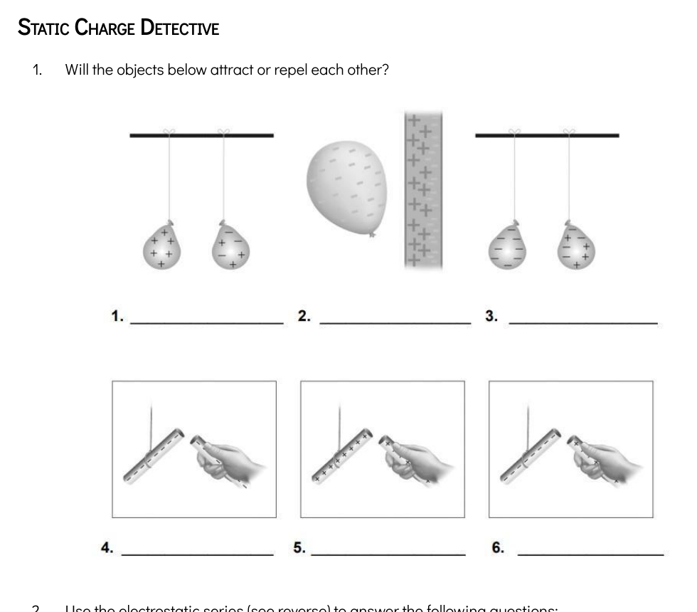
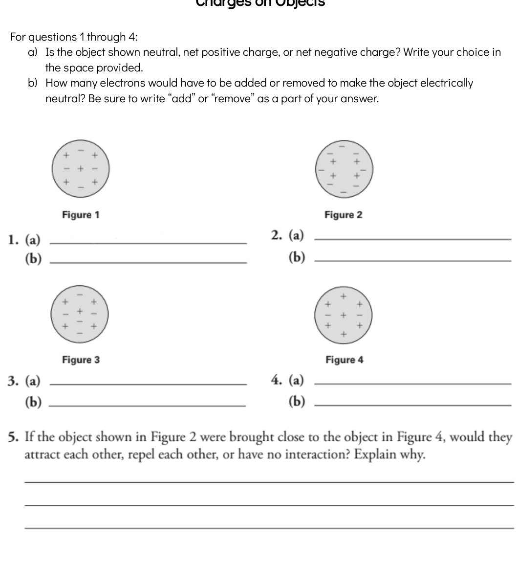
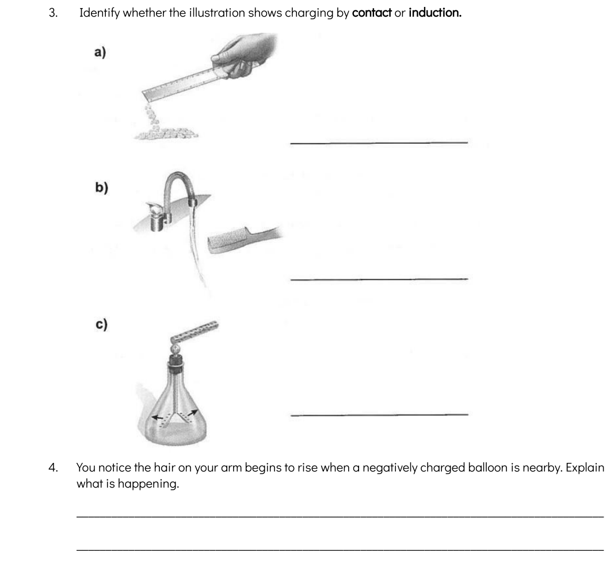
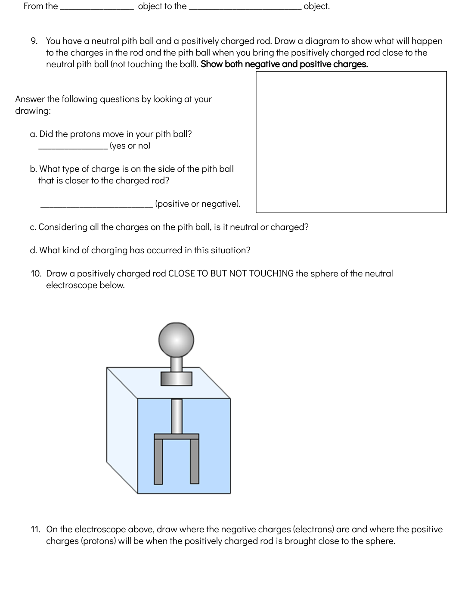

Static Charge Detective: Attract or Repel

Why students miss this
- They see a
+or-and stop before checking the net charge. - They forget that a neutral object can still be attracted.
- They assume no touching means no interaction.
How to solve it
- Count the positive and negative signs first.
- Decide whether each object is positive, negative, or neutral overall.
- Then apply the law: like charges repel, opposite charges attract.
- If one object is charged and the other is neutral, think about induced charge separation.
The biggest mistake here is skipping the "find the total charge first" step.
Charges on Objects: Net Positive, Net Negative, or Neutral

Why students miss this
- They see many
+signs and write positive without comparing the total number of+and-. - They forget to write add or remove in part (b).
- Some students write about moving protons. In this unit, the safe answer is only electrons move.
Answer pattern to memorize
- If there are more
+than-: net positive. - If there are more
-than+: net negative. - If the numbers are equal: neutral.
- To neutralize a positive object: add electrons.
- To neutralize a negative object: remove electrons.
Charging by Contact or Induction

Fast rule
- If there is touching, think contact / conduction.
- If there is no touching, think induction.
Why arm hair rises near a charged balloon
A nearby negatively charged balloon causes charge separation. Electrons in the hairs are pushed slightly away, so nearby parts of the hairs become similarly charged. Because like charges repel, the hairs spread apart and rise.
Common mistakes
- Writing contact even when the objects are only close together.
- Writing "because of static electricity" without explaining electron movement and repulsion.
Pith Ball and Electroscope: The Hardest Diagram Questions

Q9 standard logic
- A positive rod near a neutral pith ball pulls electrons in the pith ball toward the rod.
- The side closer to the rod becomes relatively negative.
- The far side becomes relatively positive.
- The whole pith ball is still neutral overall because it did not gain or lose total electrons.
- This is induction.
Answers you should know
- a) Did the protons move? No
- b) Near side charge? Negative
- c) Whole pith ball? Neutral
- d) Type of charging? Induction
Electroscope idea
A positive rod near the top sphere pulls electrons upward inside the electroscope. The leaves lose electrons, become positive, and repel each other.
If the rod is only nearby and does not touch, the electroscope is charged by induction. The electrons are not transferred permanently; they are only rearranged. When the rod is moved away, the attraction disappears, charge spreads out more evenly again, the leaves no longer keep a strong like charge, repulsion decreases, and the leaves usually come back together.
The most common wrong answer is "the pith ball becomes negative." The better answer is:
the near side becomes negative, but the whole pith ball stays neutral overall.
Text-Only Trap Questions From The Teacher Sheets
Easy-to-mix-up reminder: not every touching case is grounding. If a charged rod touches the electroscope, that is usually contact / conduction. If a finger touches the electroscope, classroom questions often treat it as grounding, because the human body is a conductor and is usually assumed to be connected to Earth. If the person is insulated from the ground, that grounding assumption may not hold.
| Source | Trap Question | What To Say |
|---|---|---|
| 1.1k Activity-Charge It | Why does the balloon stick to the wall? | The balloon gains electrons and becomes negative. It causes charge separation in the neutral wall, so the near side becomes relatively positive and attracts the balloon. |
| 1.1k Activity-Charge It | What charge do you think the water has? Explain. | Water is overall neutral, but its charges can shift or line up so it is attracted to a charged object. |
| 2.0 Notes / 2.4 Review | What is grounding? | Grounding connects an object to Earth so excess charge can move away or be supplied, helping neutralize the object. |
| 2.3 Practice | Where do electrons move in charging by contact? | From the object with more negative charge to the object with less negative charge. |
| 2.4 Review | How do you read the electrostatic series? | The material with a stronger attraction for electrons pulls electrons from the other material. The one that gains electrons becomes negative. The other becomes positive. |
If the teacher asks "why" or "explain", do not stop at the result. Add:
electrons moved or shifted, then explain attract / repel / neutralize.